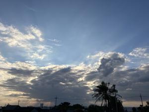
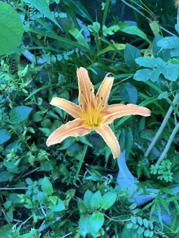

うるがいの話 ある日
最新: 酸素飽和度が９２【うるがいの話 ある日】とは 一日だけのプログです
『うるがいの話』の最新一日だけのプログで、通信料が少なく経済的だ。カニの画像をクリックすると全ての日付が載る『うるがいの話』サイトを表示します
|
|
【うるがいの話】 うるがい(ｳﾙｶﾞｲ urugai)とは、『もずくがに』の名前でとても大きくなります。 |
|---|---|
|
|
【カミマヤーの話】 猫のことを方言でマヤーといいます。カミマヤー（kamimayaa）とは、神の猫のことです。 |
|
【たながぁの音楽】 たながぁ（ﾀﾅｶﾞｰ tanagaa）とは手長えびのことで、何種類かあり大きいのは車 エビぐらいになります。 |

|
【ぶながぁの話】 ぶながぁ(ﾌﾞﾅｶﾞｰ bunagaa)とは、赤い髪の毛、赤い身体、そして身長は１ｍ２０ｃｍ ぐらい、川の蟹を食べているの目撃された。場所は沖縄県国頭郡大宜味村のと ある村僕の隣近所に住んでいる爺さんから、聞いた話です。 |
|
|
【ギーマの話】 ギーマ(giima)とは、山原の里山に咲くスズランに似た、 花を付けます。実は食べられます、 気が付くと口の周りが紫になっています。 |
2024年10月10日 (木）酸素飽和度が９２
16:59

診察を終えたら、お義母さんを和風亭で最後になるかもしれない食事を
すべ、コドモも一緒に合流させてと計画していた。診察の前の問診で部
屋に入ったヨメとお義母さんが、なかなか出てこない。しばらくすると
ヨメが、普通なら９７だけど、酸素飽和度が９２！、今からレントゲン
を撮ると言う。オー、やばいぜ。仕事をしているコドモにラインで、状
況を説明、もしかしたら食事会は中止かも。レントゲンと撮る移動で歩
行器はやめて、車椅子に変えた方がいいと看護師が言う。３０分以上経
ち、診察の前に再度問診を行うと９５になっていた。歩行器で、立ち上
がったりしたときに酸素飽和度が、下がることがあるらしい。

診察になる、カリウム値が７．２、前回は５．４、急激に腎臓の機能が
悪化しているようだ。レントゲンでは、本人は自覚症状がないものの軽
い心不全になっているようだ。次回まで、何らか息苦しいなどの状況が
起きたら、直ぐにこちらへ来るように。ひどい場合は、県立病院へ救急
車で搬送するように。医者は、涙目になってそろそろ準備するようにと
言った。お義母さんは、事態を認識していないようだった。食事はいい
というので、和風亭も車椅子を使い移動、美味しいそうにたらふく食事
をした。コドモが途中から参加、あんただれ？、ミツル、ダイチャン？
しばらく、キョトンとしていた。
１６時５４分 ビットコインの総資産 ￥２６、３２３（↓４８５）